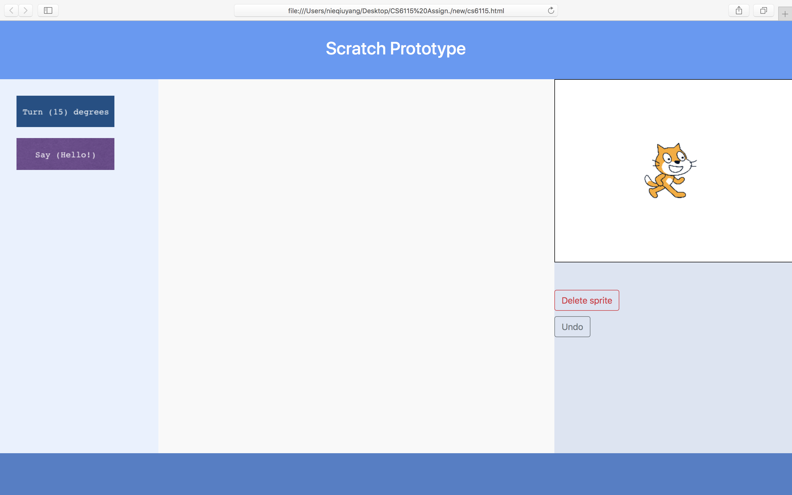
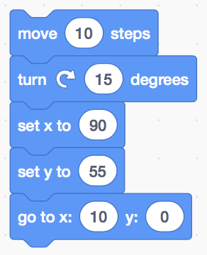
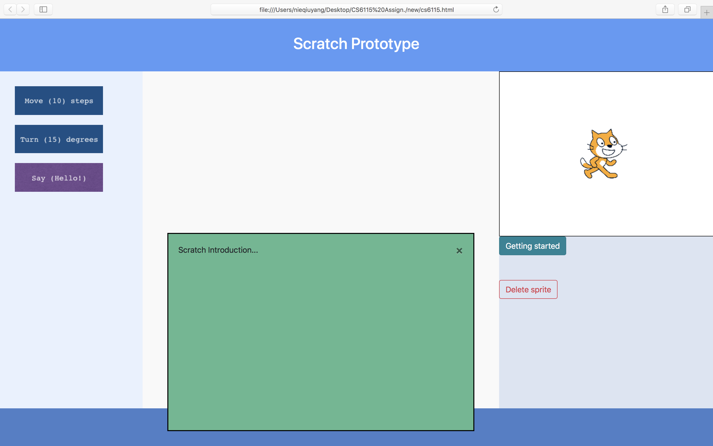

Scratch usability and accessibility assessment
Scratch is a visual programming language that makes it easy to create interactive stories, animations, games, music, and art and share these creations on the web [1]. There is an online Scratch programming website, which allows implementing these creations. This report assesses the main and basic usability and accessibility of this website and proposes some user interface improvements with low-fidelity prototyping. The prototype is only suitable to demonstrate some proposed design solutions.
Usability analysis
The usability analysis is based on the Jocab's Nielsen's ten recommended heuristics evaluation.
1. Match between system and the real world
The system should speak the user's language, with words, phrases, and concepts familiar to the user, rather than system-oriented terms. Following real-world conventions, making information appear in a natural and logical order [2].
The main user on the Scratch site is between the ages of eight and 16 (peaking at 12), though a sizeable group of adults participants as well [3]. Furthermore, the website can be an online learning platform which allows learning important mathematical and computational concepts, etc. Therefore, there are some operations or terms that could be system-oriented or technical for programming novices.
2. User control and freedom & Help users recognize, diagnose, and recover from errors
Users often choose system functions by mistake and will need a clearly marked 'emergency exit' to leave the unwanted state without having to go through an extended dialogue. Support undo and redo [2].
In the review and test the website, when the user clicks the delete button of the Sprite1, the Sprite1 and its code will be easily deleted (Figure 1). If this is not deleted by the user on purpose, it could annoy the user because there is no undo operation. The code is deleted without the save.
The improved design could implement an 'Undo' button when the user accidentally deletes the Sprite, which allows the user can go back the previous status without losing their code. In the new design prototype (Figure 2), the 'Undo' button only will be displayed when the user has deleted the sprite. This is in order to avoid confusion and potential errors because the 'Undo' button is only valid and responsible for sprite (code blocks) recovery when the user has dropped some code blocks into the centre editing panel and then has accidentally deleted the Sprite.
3. Error prevention
Even better than a good error message is a careful design which prevents a problem from occurring in the first place. Either eliminate error-prone conditions or check for them and present users with a confirmation option before they commit to the action [2].
This could be a similar problem when the user deletes the Sprite by mistake, the whole code blocks are also deleted. This problem could also be addressed by asking the user about confirmation on the operation he/she made. For example, there is a confirmation prompt when the user is leaving the whole page, which could attempt to avoid the problem such as unsaved file (Figure 3). Another good design on this website is that there are error preventions in some code block. For example, the user can only input the numerical values into the Motion code blocks (Figure 4).

The delete the Sprite can be a high-risk operation as mentioned before, the new design also implements the confirmation dialog to inform the user if the operation should be committed (Figure 5). However, due to the simple demonstrations using Window confirm() method, the text of the choices in the confirmation box might not be correct to correspond the question. For example, if the 'OK' is replaced to 'Yes' could be better to match the real world conversion.
4. Consistency and standards
Users should not have to wonder whether different words, situations, or actions mean the same thing [2].
5. Recognition rather than recall
Minimise the user's memory load by making objects, actions, and options visible [2].
The general user interface of this website can be simple. In addition, all code blocks, navigation, are named by words. Some buttons are labelled by using the icon which might need to be learned by the user. However, there is accompanying information about these buttons, which is displayed when the user moves the mouse pointer onto these buttons, which can reduce the memory load of the user. In addition, the console (the sprite) is always displayed by the side of the coding panel. This can provide the live coding so that the user can edit the code blocks (e.g. drag-and-drop the code blocks) and check the result (e.g. animation of the sprite) in the console at the same time.
6. Flexibility and efficiency of use
Accelerators ‑ unseen by the novice user ‑ may often speed up the interface for the expert user such that the system can cater to both inexperienced and experienced users [2].
When the website is opened, there is always an introduction tutorial section that is displayed on the page (Figure 6). This could consider the novice user, the expert user, however, might not need this basic tutorial every time when he/she begins the project. Therefore, it could be beneficial to cater to the experienced user by removing the introduction tutorials for them.

The new prototype design attempts to remove the automatic tutorial launched when the user opens the website. A 'Getting started' button is implemented so that the beginner user can click that button to get relevant guides, the experienced user is not bothered by this tutorial so that the efficiency could be improved (Figure 7). Furthermore, the tutorial is displayed until it is closed by the user. The user can drag the code blocks while reading the introduction tutorial. This could be helpful to reduce the memory load.
7. Visibility of system status
The system should always keep users informed about what is going on, through appropriate feedback within a reasonable time [2].
When the user drags a code block, the destination of where to put the code block might be confusing because there is a lack of cues which can hint the user which part of the page should be dropped the code he/she is dragging especially for the novice user. Therefore, a potential improvement is to implement the border highlights of the destination when the user is doing the drag-and-drop operation, which could give the user the instant feedback and hint to help the completion of the goal (Figure 8).
8. Aesthetic and minimalist design
Interfaces need to be cleared of unnecessary elements and content that do not support the page goals and tasks [4].
The interface of the website can be concise because most of the information presented can be relevant to the creative activities of the user.
9. Help and documentation
Even though it is better if the system can be used without documentation, it may be necessary to provide help and documentation. Any such information should be easy to search, focused on the user's task, list concrete steps to be carried out, and not be too large [2].
There is a tutorial button on the menu bar of the Scratch website, which is can be useful for novice users to get some support and for experienced users to check the advanced functionalities.
Accessibility analysis
The accessibility of the Scratch website is tested by using an online accessibility checker, the WebAIM Wave tool for assessing basic potential accessibility issues. According to the results of the online test, there are three significant accessibility issues (errors) are detected. First, there is not a title on the original website. "Without a proper title, many users (especially those using screen readers or other assistive technology) may have difficulty orienting themselves to the page [5]." A title tag is added to the new prototype HTML file with a concise name of the page. Second, there is a button which is empty or has no value in the Scratch page. This may also cause some difficulty for screen readers. Third, the form label is also lack of descriptive text. The new design prototype attempts to add descriptive text into HTML tags.
Reference
- [1] Scratch. (2019). Retrieved from http://www.scratch.ie
- [2] 10 Heuristics for User Interface Design: Article by Jakob Nielsen. (2019). Retrieved from https://www.nngroup.com/articles/ten-usability-heuristics/
- [3] Resnick, M., Silverman, B., Kafai, Y., Maloney, J., Monroy-Hernández, A., & Rusk, N. et al. (2009). Scratch. Communications Of The ACM, 52(11), 60. doi: 10.1145/1592761.1592779
- [4] 10 Usability Heuristics with Examples. (2019). Retrieved from https://blog.prototypr.io/10-usability-heuristics-with-examples-4a81ada920c
- [5] Wave web accessibility evaluation tool: testing the Scratch website. (2019). Retrieved from http://wave.webaim.org/report#/https://scratch.mit.edu/projects/editor/?tutorial=getStarted